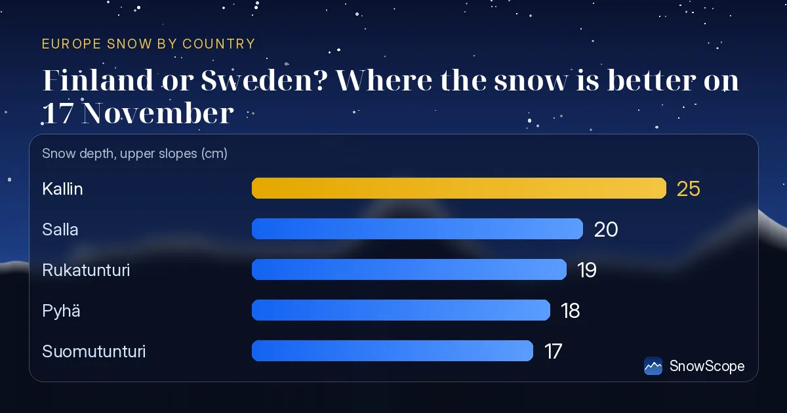

Finland or Sweden? Where the snow is better on 17 November
59 % of the mapped high ground is white in Finland, against 79 % in Sweden. The deepest resort in Finland has 13 cm; in Sweden it is Abisko with 130 cm.
See the live snow forecast for Kallin in the SnowScope appSnow depth, powder alerts and the 3D map, free.
Across the border
For a trip near the border this decides the direction: the snow is not where the map of borders would suggest, it is where the last storm went.
Snow covers roughly 178,550 km² in Finland on 17 November, up 21,190 km² on yesterday. In other words, 59 % of the mapped high ground is white.
| Country | White | Deepest resort | Next 7 days |
|---|---|---|---|
| Finland | 59 % | Kallin | 15 cm |
| Sweden | 79 % | Abisko | 25 cm |
| Norway | 87 % | Riksgränsen | 52 cm |

The neighbours today
For comparison, the neighbours on the same day: Sweden: 79 % white, deepest Abisko with 130 cm, up to 25 cm in the week ahead; Norway: 87 % white, deepest Riksgränsen with 170 cm, up to 52 cm in the week ahead.

Best resorts right now
At the top of the list, Kallin reports 25 cm.
Next on the list: Salla (20 cm), Rukatunturi (19 cm), Pyhä (18 cm) and Suomutunturi (17 cm).
Kallin picked up 6 cm in the last three days and could add 10 cm by Friday 20 November.
Salla picked up 10 cm in the last three days and could add 7 cm by Friday 20 November.
Snow lies on the upper slopes of 28 out of 67 resorts in Finland.
The rest of the shortlist: Rukatunturi: 19 cm on top, 10 cm in three days, 7 cm expected; Pyhä: 18 cm on top, 6 cm in three days, 11 cm expected; Suomutunturi: 17 cm on top, 12 cm in three days, 7 cm expected.
Snow on the way?
Expect up to 11 cm on the snowiest slopes by the third day; the seven-day total reaches 15 cm.
Wednesday 18 November stands out, with up to 8 cm in a day.
How deep it is, height by height
Snow depth on the ground, height by height: 0-500 m: on average 4 cm (59 % of the ground white); 500-1,000 m: on average 13 cm (99 % of the ground white); 1,000-1,500 m: on average 38 cm (100 % of the ground white).
How much of the country is white
Compared with 52,200 km² seven days ago, that is 126,350 km² more. Even the lowest ground is mostly white.
Where the fresh snow fell
Three-day totals peak at 10 cm, around the Kainuu hills and the Ruka fells.
In the past day, up to 6 cm was added.
At least 5 cm fell over some 69,510 km².
Compared with past winters
Here is how the deepest resorts compare with their usual 17 November: Kallin: 13 cm at about 40 m, against 4 cm in a normal year; Salla: 19 cm at about 356 m, against 17 cm in a normal year; Rukatunturi: 16 cm at about 390 m, against 15 cm in a normal year; Pyhä: 13 cm at about 285 m, against 16 cm in a normal year.
3 of these 4 resorts are above their usual depth for the date.
These depths are for one height on each mountain, below the top, so they read lower than the upper-slope numbers further down.
In past winters the best snow at Kallin usually came early March / mid-March.
Planning a day on the snow
Above 500 m the ground is almost fully white (99 % covered), so runs up there have a continuous base.
Between 0 m and 500 m the cover is patchy, about 59 % white: expect grass and stones between the snow.
If you can choose the day, go after Wednesday 18 November: the fresh snow then has time to settle and the roads to be cleared.
What it means on the slopes
The new snow freshens the upper slopes; lower down it may already be heavy or wet.
With more snow in the forecast, the next days should improve things further.
Tips for skiers
- Roads to the higher resorts may need winter tyres or chains.
- Read the local avalanche bulletin before going off-piste.
- Morning snow is firm after a clear night: wait for the sun on south faces.
About these numbers
Resort snow depths are the deepest snow on the resort's upper slopes from the SnowScope snow model (about 1 km, run of 17 November); they are estimates for an area, not a measurement at one point. Station values are measurements on the date shown. Forecasts can change. Always read the official avalanche bulletin before going off-piste.
Cite this report
For research, teaching or the press: the numbers and charts are free to reuse under CC BY 4.0 with this citation.
SnowScope (2026), Finland or Sweden? Where the snow is better on 17 November, https://snowscope.app/blog/en/2026/11/finland-snow-report-17-november-2026.html, accessed 2026-11-17
SnowScope (Atlas Labs). (2026, November 17). Finland or Sweden? Where the snow is better on 17 November. SnowScope snow reports. https://snowscope.app/blog/en/2026/11/finland-snow-report-17-november-2026.html
BibTeX
@misc{snowscope2026finlandsnowreport17novem,
author = {{SnowScope (Atlas Labs)}},
title = {Finland or Sweden? Where the snow is better on 17 November},
year = {2026},
month = nov,
howpublished = {\url{https://snowscope.app/blog/en/2026/11/finland-snow-report-17-november-2026.html}},
note = {Published 2026-11-17 12:53 UTC; accessed 2026-11-17}
}· CC BY 4.0 · Methods, data and tools →
Kallin: snow and temperature by height, this winter vs last (tools) →
Follow Kallin
Free: a message when fresh snow is coming, and the forecast every morning.
More snow reports

SnowScope's peak finder is a free peak finder app: point your phone at the mountains and it names the summits, with height, distance and climb time. Our tests: 98 % of the summits it lists are really in sight, and on real photos it corrected compass errors of up to 105° to 0.15°. Free with 3 names, every peak for $0.99 once.

Snow is falling on Slovenia's ski mountains today: about 37 cm on Kanin and 21 cm on Krvavec. Where the snow lies, how it compares with past winters, and the next snowy day.

Tornik on Zlatibor had up to 39 cm on its upper slopes on 15 November 2026; by Wednesday it had melted. Kopaonik barely turned white. The week day by day and what comes next.